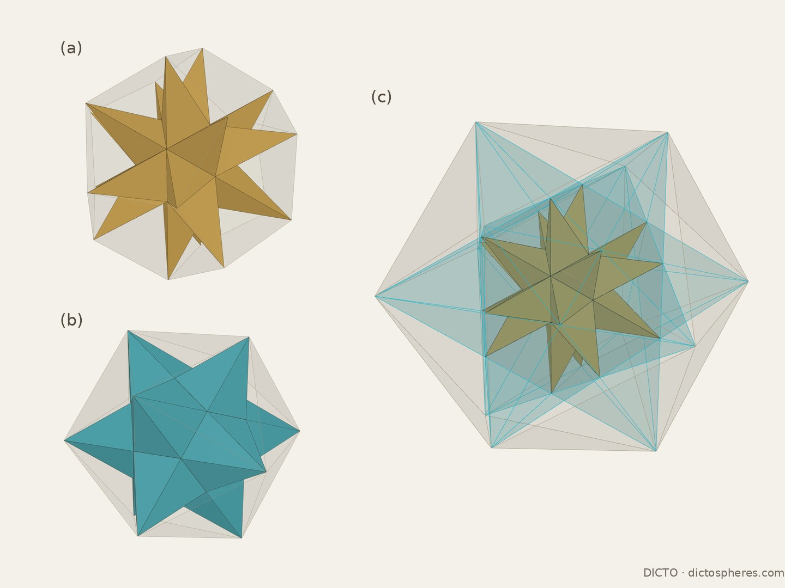

The tall companion to Universal PiTet: the great and small stellated dodecahedra in an endless φ³ cycle, every shell filled exactly by one pattern, with DICTO's CLEO returning

Let I be the icosahedron of edge 1. On each face raise a pyramid whose tip lies at three times the face's distance from the centre: this is Kepler's great stellated dodecahedron (the spikes' sides fall into its twelve pentagram planes), and its twenty tips are the corners of a dodecahedron D1 of edge φ. On each face of D1 raise a pyramid with its tip at √5 times the face distance: Kepler's small stellated dodecahedron, whose twelve tips are the corners of the icosahedron I·φ³. That icosahedron starts the next turn. The stars and their hulls are classical [1–3]; what follows is the cycle's proportions and its fill.
| Edge | Spire height ÷ face radius | Star ÷ core (volume) | |
|---|---|---|---|
| I (core) | 1 | ||
| great stellated star on I | φ² | 3 (each spike = I/10) | |
| D1 (its hull) | φ | ||
| small stellated star on D1 | φ | √5 (12 spires = (√5 − 1)·D1) | |
| I·φ³ (its hull) | φ³ | one turn: ×φ⁹ |
Table 1. The proportions of one turn. The step on the triangles (three-fold axes) has the taller spire (φ²) and the smaller hull step (×φ); the step on the pentagons (five-fold) has the shorter spire (φ) and the larger hull step (×φ²). Every turn is the same.
Each shell, core → star → hull, is filled by the pattern of DICTO's Cleo star (DICTO DOI: 10.5281/zenodo.23378070): the star's spikes; one inward pyramid on each face of the hull, its apex at the core's corner beneath; and one valley tetrahedron on each edge of the core, its other two corners the tips of the two spikes beside that edge.
| Shell | Pieces | Exact volume of each | Is |
|---|---|---|---|
| I → great star → D1 | 20 spikes | 1/8 + √5/24 | DICTO's CLEO |
| 12 inward pyramids | 5/8 + 7√5/24 | DICTO's cap | |
| 30 valley tetrahedra | 1/6 + √5/12 | DICTO's AXE | |
| D1 → small star → I·φ³ | 12 spires | 5/3 + 3√5/4 | new here |
| 20 inward pyramids | 29/24 + 13√5/24 | CLEO again | |
| 30 valley tetrahedra | 3/4 + √5/3 | new here |
Table 2. The two shells of a turn. In each, the pieces fill core → hull exactly: the volumes sum to the gap with remainder exactly 0, every piece lies in the hull and outside the core, and no two overlap (an exact separating plane for every close pair). Each kind is one volume; each next turn repeats them φ³ larger.
The first shell is DICTO's AXE, CLEO and cap kit [9, 10], already published as in-between stages (Capturing the In-betweens, DICTO DOI: 10.5281/zenodo.23345502): icosahedron + 20 CLEO is the great stellated dodecahedron, + 30 AXE the excavated dodecahedron [4], + 12 caps the dodecahedron. CLEO and AXE are Mosseri–Sadoc tiles [5, 6]. The second shell brings CLEO back as its inward pyramid, the same shape at a larger size, beside the small stellated spire and a new valley tetrahedron.


DICTO relates the tall spires to the sculptors' practice of shaping a figure for its viewpoint (Gothic portal figures; Michelangelo's David, made for a place high above the viewer). A pinhole-camera model (float) gives two results. Seen from outside, on a spire's base plane at six base radii, the true spires already look almost right (corrections ×0.94 and ×1.03). Seen from inside, standing in a valley at a spike's foot, they look about three times squatter, and no height reads right, because added height recedes from view. In the Kaleidohedra app a reverse-perspective projection (REV) lets a viewer inside a shell see it open out instead.
Classical: the great and small stellated dodecahedra, their hulls and the φ³ step [1–3]; the great stellated dodecahedron's volume, three icosahedra, follows from the standard formulas. Not found in the sources checked (the reference library of the companion paper, and web searches on 19 October 2026): the endless cycle filled by one piece pattern; the small stellated dodecahedron as √5 times its core; the second shell's fill, with CLEO returning beside the spire and the new valley tetrahedron. Related dissections of the stellated dodecahedra exist [7].
exact_kp.py (exact: the cycle, the volumes, the fill and no-overlap); kp.py, cleo_pattern.py (float exploration), perspective.py (the perspective model); export_figs.py and the figure page.